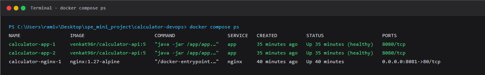
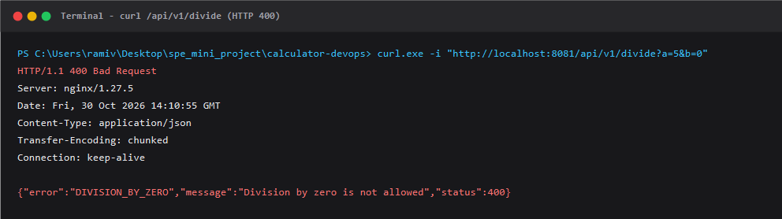
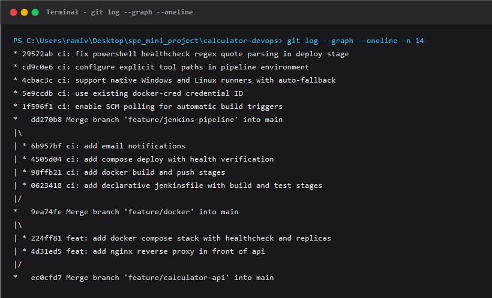
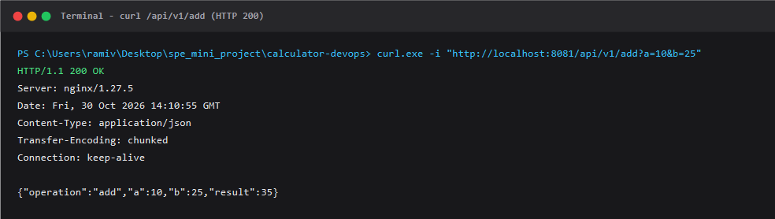

(a) Green Jenkins pipeline run (all stages)
A Spring Boot (Java 17, Maven) calculator service exposes /api/v1/add, subtract, multiply, divide and the Actuator endpoint /actuator/health. Invalid or missing parameters and division by zero return HTTP 400 with a structured JSON error.
Developer GitHub Jenkins Email
git push --> repository --> Pipeline job + Jenkinsfile --> notification
(main) (SCM Poll) (post block)
|
+-------------------------------------+
v
+---------------+ +---------------+ +---------------+ +--------------------+ +-------------------+ +------------------+
| 1. Checkout | --> | 2. Build | --> | 3. Test | --> | 4. Docker Build | --> | 5. Push | --> | 6. Deploy |
| (checkout scm)| | (mvn package) | | (JUnit+MockMvc) | (tag = build no.) | | (Docker Hub) | | (compose up -d) |
+---------------+ +---------------+ +---------------+ +--------------------+ +-------------------+ +------------------+
| |
v v
+-----------------------+ +----------------------+
| Docker Hub | | Docker Compose Stack |
| calculator-api: | | (calc-net) |
+-----------------------+ +----------+-----------+
|
+-----------------+-----------------+
| |
v v
+-----------------------+ +-----------------------+
| calculator-app-1 | | calculator-app-2 |
| (replica 1, UP) | | (replica 2, UP) |
+-----------------------+ +-----------------------+
^ ^
| |
+-----------------+-----------------+
|
+-------------+-------------+
| Nginx Reverse Proxy |
| :8081 -> :80 |
+---------------------------+
| Stage | Description |
|---|---|
| Checkout | checkout scm pulls the latest commit. The job is triggered automatically by SCM polling (pollSCM('* * * * *')). |
| Build | mvn -B clean package -DskipTests compiles Java 17 code and produces the executable JAR target/calculator.jar. |
| Test | mvn -B test runs the JUnit 5 unit tests and MockMvc integration tests. The junit step publishes target/surefire-reports/*.xml; a failing test halts the pipeline. |
| Docker Build | Builds the multi-stage image (Maven/JDK 17 build stage, slim JRE 17 Alpine runtime stage, non-root user app:100, EXPOSE 8080, dependency layer cached) and tags it with the build number and latest. |
| Push | Logs in with withCredentials using Jenkins credential docker-cred, pipes credentials through docker login --password-stdin, pushes both tags, and logs out in a post block. No secret is stored in repository or logs. |
| Deploy | docker compose pull && docker compose up -d --remove-orphans starts Nginx and two replicas, then polls /actuator/health through the proxy (up to 100 s) and fails the build if the stack never reports UP. |
| Notify | The pipeline post block dispatches a SUCCESS or FAILURE email with the build URL. |
Idempotency. Re-running with the same image tag leaves all containers untouched; a new tag recreates only the calculator replicas, and the health check still passes. Both cases were verified repeatedly across pipeline executions.
Compose design. The stack declares a named bridge network (calc-net), a health check on /actuator/health, restart: unless-stopped, environment variables, and depends_on with condition: service_healthy so Nginx starts only after the API is ready. The proxy host port is mapped to 8081 (avoiding Jenkins port 8080), and the image tag is dynamically injected (IMAGE_TAG).
Version control. Work was done progressively on feature branches and merged with --no-ff: feature/calculator-api, feature/docker, and feature/jenkins-pipeline, using conventional commit messages. .gitignore excludes build outputs, IDE files, and secrets.
127.0.0.11 valid=10s;) with a runtime variable in proxy_pass (set $upstream http://app:8080; proxy_pass $upstream;) makes Nginx resolve dynamically per request; traffic is evenly distributed across both replicas and recreated containers are picked up without restarting Nginx.
8081:80); the Compose project name is pinned (calculator) so it remains independent of the Jenkins workspace folder.
sh.exe and user environment variables. Implementing cross-platform step branching (isUnix()), explicitly injecting JAVA_HOME and Maven into the pipeline PATH, and resolving PowerShell embedded regex quotes in the healthcheck loop allowed the pipeline to execute natively on Windows while remaining 100% portable to Linux agents.
pollSCM('* * * * *')) was configured to query GitHub every minute, reliably triggering builds on push.





